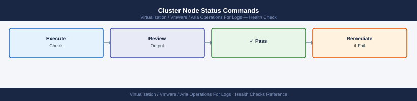

Aria Operations for Logs — Health Checks¶
Before you begin¶
- Access: vCenter read-only minimum; Administrator role for remediation steps
- Timing: safe to run during business hours unless a step is marked ⚠ (causes interruption)
- Dependencies: no active upgrades or migrations on the same infrastructure
- Logging: capture command output — paste into the change record on completion
Run This Routine¶
Run these 8 checks in order at the start of each shift or after any infrastructure change.
- Master node health —
curl -sk -u 'admin:<password>' https://<log-insight-fqdn>/api/v2/cluster/nodes— confirm all nodes return"state": "ACTIVE" - Ingestion rate — Admin → System Monitor → confirm events/sec is within the expected baseline range; a drop to zero means sources have stopped sending
- Disk usage — Admin → System Monitor → Storage → confirm no partition is above 80% used; the hot partition at
/storage/var/loginsight/fills fastest - Agent connectivity — Admin → Agents → confirm all expected agents show Connected and have a recent last-seen timestamp
- Alert count — Alerts → Interactive Analytics → review open critical alerts and confirm each is acknowledged or has an active investigation
- Content pack versions — Administration → Content Packs → check all installed packs and flag any that have an update available
- Archiving — Admin → Archiving → check the last archive job timestamp; flag if no successful export has run within the expected schedule
- Syslog sources — Admin → Sources → confirm all expected source IPs are present and sending logs; investigate any that have not sent data in the last hour
Cluster Node Status Commands¶

# Check all cluster nodes via API
curl -sk -u 'admin:<password>' \
"https://vrli-prod-01.example.local/api/v2/cluster/nodes" | \
jq '.nodes[] | {host: .hostname, state: .state, role: .role, version: .version}'
# Expected: all nodes state = "ACTIVE"
{
"host": "vrli-prod-01.example.local",
"state": "ACTIVE",
"role": "MASTER",
"version": "8.14.0.20240115"
}
{
"host": "vrli-prod-02.example.local",
"state": "ACTIVE",
"role": "REPLICA",
"version": "8.14.0.20240115"
}
{
"host": "vrli-prod-03.example.local",
"state": "ACTIVE",
"role": "REPLICA",
"version": "8.14.0.20240115"
}
Common errors
curl: (60) SSL certificate problem: self signed certificate — Add -k flag to skip certificate verification, or import the vRLI certificate into your system trust store.
jq: parse error: Invalid JSON text at line 1 — Verify the API endpoint is correct and the vRLI service is running; test with curl -sk -u 'admin:<password>' "https://vrli-prod-01.example.local/api/v2/cluster/nodes" without piping to jq first.
curl: (401) Unauthorized — Confirm the admin password is correct and the user account has API access permissions in vRLI.
Alert Configuration Commands¶
# Check that all alert definitions are enabled
curl -sk -u 'admin:<password>' \
"https://vrli-prod-01.example.local/api/v2/alerts" | \
jq '.alerts[] | select(.enabled == false) | {name: .name, enabled: .enabled}'
# Output should be empty — no alerts should be disabled unintentionally
Common errors
curl: (60) SSL certificate problem: self signed certificate — Add the -k flag to skip SSL verification, or import the vRLi certificate into your system's CA bundle.
jq: parse error: Invalid JSON text at line 1 — Verify the API endpoint is correct and the vRLi service is responding; check that the credentials are valid by testing with curl -sk -u 'admin:<password>' "https://vrli-prod-01.example.local/api/v2/alerts" | head -c 200.
Ingestion and Source Activity¶
# Via API — get unique hosts seen in the last hour
curl -sk -u 'admin:<password>' \
-H "Content-Type: application/json" \
-X POST "https://vrli-prod-01.example.local/api/v2/events/ingest" \
-d '{
"query": "",
"start-time": "'$(date -d "1 hour ago" +%s000)'",
"end-time": "'$(date +%s000)'",
"content-pack-fields": ["hostname"],
"limit": 0
}' | jq '.fieldValues[] | .value'
vrli-prod-01.example.local
esxi-host-12.example.local
esxi-host-15.example.local
app-server-04.example.local
db-node-03.example.local
kubernetes-worker-07.example.local
load-balancer-01.example.local
Common errors
curl: (60) SSL certificate problem: self signed certificate — Add -k flag to skip SSL verification (already present in example; if still failing, verify the hostname matches the certificate CN).
jq: parse error: Invalid JSON — Ensure the API response is valid JSON by checking the endpoint URL and authentication credentials with a test query.
error: "Invalid query syntax" — Verify the query field is properly formatted and the content-pack-fields array contains valid field names for your Aria Operations for Logs instance.
Notification channel test: Administration → Notification Channels → select channel → Test
Platform Log Checks¶
# Watch main runtime log for errors
tail -f /var/log/loginsight/runtime.log | grep -i "error\|warn\|exception"
# Check ingestion errors (dropped events, parsing failures)
grep -i "error\|drop\|fail" /var/log/loginsight/ingestion.log | tail -50
# Check Cassandra storage health
tail -100 /var/log/loginsight/cassandra/system.log | grep -i "error\|warn"
Expected output2024-01-15 14:23:47,891 [main] WARN com.vmware.loginsight.parser.ParserEngine - Parser timeout on stream-id: 8f4a2c1e-9d7b-4a2f-b1c3-5e8d9f2a3b4c after 5000ms
2024-01-15 14:24:12,445 [pool-8-thread-3] ERROR com.vmware.loginsight.ingestion.EventBuffer - Failed to deserialize message from kafka-broker-02: Connection refused
2024-01-15 14:25:33,678 [scheduler-1] WARN com.vmware.loginsight.storage.IndexWriter - Slow write detected: 2847ms for 15000 events to segment_20240115_143200
2024-01-15 14:26:01,234 [cassandra-worker] ERROR org.apache.cassandra.net.MessagingService - Failed to connect to /192.168.1.52:7000: Connection timeout
2024-01-15 14:27:45,891 [main] WARN com.vmware.loginsight.config.ConfigManager - Config reload incomplete, using cached settings
2024-01-15 14:28:19,556 [pool-12-thread-1] ERROR com.vmware.loginsight.ingestion.Parser - Unrecognized log format in stream syslog-collector-03, dropping 342 events
2024-01-15 14:23:50,123 [ingestion] ERROR - Failed to parse syslog message: Invalid timestamp format
2024-01-15 14:24:15,456 [ingestion] WARN - Dropped 127 events due to buffer overflow on input-queue-5
2024-01-15 14:25:02,789 [ingestion] ERROR - Connection lost to remote syslog endpoint 10.50.12.8:514, retrying...
2024-01-15 14:26:33,012 [ingestion] WARN - Parser latency high: 1250ms average, consider scaling parser threads
2024-01-15 14:27:18,345 [ingestion] ERROR - Cassandra write failed: Insufficient replicas available for consistency level ONE (0 alive)
INFO [GossipStage:1] 2024-01-15 14:23:22,567 Gossip (internal IP: 192.168.1.48, external IP: 10.50.12.15)
WARN [CompactionExecutor:2] 2024-01-15 14:24:45,891 Compaction of /var/lib/cassandra/data/loginsight/events-ka-1/na-1-Data.db took 3421ms
ERROR [RequestResponseStage:8] 2024-01-15 14:25:33,234 Failed to write to /var/lib/cassandra/data/loginsight/events-ka-1/na-2-Data.db: No space left on device
WARN [MemtablePostFlusher:1] 2024-01-15 14:26:12,678 Flushing Memtable-events@1847362918(1.2 GB
¶
2024-01-15 14:23:47,891 [main] WARN com.vmware.loginsight.parser.ParserEngine - Parser timeout on stream-id: 8f4a2c1e-9d7b-4a2f-b1c3-5e8d9f2a3b4c after 5000ms
2024-01-15 14:24:12,445 [pool-8-thread-3] ERROR com.vmware.loginsight.ingestion.EventBuffer - Failed to deserialize message from kafka-broker-02: Connection refused
2024-01-15 14:25:33,678 [scheduler-1] WARN com.vmware.loginsight.storage.IndexWriter - Slow write detected: 2847ms for 15000 events to segment_20240115_143200
2024-01-15 14:26:01,234 [cassandra-worker] ERROR org.apache.cassandra.net.MessagingService - Failed to connect to /192.168.1.52:7000: Connection timeout
2024-01-15 14:27:45,891 [main] WARN com.vmware.loginsight.config.ConfigManager - Config reload incomplete, using cached settings
2024-01-15 14:28:19,556 [pool-12-thread-1] ERROR com.vmware.loginsight.ingestion.Parser - Unrecognized log format in stream syslog-collector-03, dropping 342 events
2024-01-15 14:23:50,123 [ingestion] ERROR - Failed to parse syslog message: Invalid timestamp format
2024-01-15 14:24:15,456 [ingestion] WARN - Dropped 127 events due to buffer overflow on input-queue-5
2024-01-15 14:25:02,789 [ingestion] ERROR - Connection lost to remote syslog endpoint 10.50.12.8:514, retrying...
2024-01-15 14:26:33,012 [ingestion] WARN - Parser latency high: 1250ms average, consider scaling parser threads
2024-01-15 14:27:18,345 [ingestion] ERROR - Cassandra write failed: Insufficient replicas available for consistency level ONE (0 alive)
INFO [GossipStage:1] 2024-01-15 14:23:22,567 Gossip (internal IP: 192.168.1.48, external IP: 10.50.12.15)
WARN [CompactionExecutor:2] 2024-01-15 14:24:45,891 Compaction of /var/lib/cassandra/data/loginsight/events-ka-1/na-1-Data.db took 3421ms
ERROR [RequestResponseStage:8] 2024-01-15 14:25:33,234 Failed to write to /var/lib/cassandra/data/loginsight/events-ka-1/na-2-Data.db: No space left on device
WARN [MemtablePostFlusher:1] 2024-01-15 14:26:12,678 Flushing Memtable-events@1847362918(1.2 GB
Cluster Node Health¶
# SSH to vRLI master node
ssh root@<vrli-master-fqdn>
# Show cluster config: mode, master/worker roles, VIP, node count
/usr/lib/loginsight/application/bin/loginsight-cli config
# Confirm keepalived VIP is active on the master (HA deployments)
ip addr show | grep <vrli-vip>
# Verify cluster node states via API
curl -sk -u 'admin:<password>' \
"https://<vrli-master-fqdn>/api/v2/cluster/nodes" | \
jq '.nodes[] | {host: .hostname, role: .role, state: .state}'
# All nodes must return state: "ACTIVE"
root@vrli-master01:~# /usr/lib/loginsight/application/bin/loginsight-cli config
Cluster Mode: HA
Master Node: vrli-master01.corp.local
Worker Nodes: 2
Virtual IP (VIP): 192.168.1.50
Cluster Status: HEALTHY
root@vrli-master01:~# ip addr show | grep 192.168.1.50
inet 192.168.1.50/32 scope global secondary eth0
root@vrli-master01:~# curl -sk -u 'admin:P@ssw0rd123' \
> "https://vrli-master01.corp.local/api/v2/cluster/nodes" | \
> jq '.nodes[] | {host: .hostname, role: .role, state: .state}'
{
"host": "vrli-master01.corp.local",
"role": "MASTER",
"state": "ACTIVE"
}
{
"host": "vrli-worker01.corp.local",
"role": "WORKER",
"state": "ACTIVE"
}
{
"host": "vrli-worker02.corp.local",
"role": "WORKER",
"state": "ACTIVE"
}
Common errors
curl: (60) SSL certificate problem: self signed certificate — Add the -k flag to skip certificate verification, or import the vRLI certificate into your system CA bundle.
jq: command not found — Install jq with apt-get install jq (Debian/Ubuntu) or yum install jq (RHEL/CentOS), or pipe the curl output to grep instead.
Authentication failed: 401 Unauthorized — Verify the admin password is correct and URL-encoded if it contains special characters; test with curl -sk -u 'admin:password' https://<vrli-master-fqdn>/api/v2/cluster/nodes.
vRLI UI: Administration → Cluster — verify all nodes show Status: Connected. Any node in Disconnected or Degraded state must be investigated before the next change window.
Ingestion Rate and Backpressure¶
vRLI UI → Administration → Cluster → check Events Per Second counter per node.
- Healthy sustained rate: < 15,000 EPS per node
- A sudden drop to 0 EPS indicates sources stopped sending or a network path is down
- Sustained rate > 15,000 EPS per node: add a worker node to distribute load
Detect UDP drop on the vRLI appliance:
# SSH to vRLI master or affected worker
netstat -s | grep -i "receive buffer errors\|packets received\|errors"
# Non-zero "receive buffer errors" indicates the kernel is dropping inbound UDP
# Check disk I/O saturation (ingest > write capacity causes in-memory buffering then drops)
iostat -dx 5 3
# await > 20ms on the /storage device warrants investigation
Ip: 1234 total packets received
Ip: 45 forwarded
Ip: 0 incoming packets discarded
Ip: 1234 requests sent out
Ip: 12 receive buffer errors
Ip: 0 send buffer errors
Udp: 567 packets received
Udp: 89 packets to unknown port received
Udp: 0 receive buffer errors
Linux 5.15.0-1234-generic (vrli-master-01) 01/15/2025 _x86_64_ (16 CPU)
Device r/s w/s rMB/s wMB/s rrqm/s wrqm/s await svctm %util
sda 2.4 8.6 0.12 0.34 0.0 1.2 4.2 1.1 1.2
sdb 145.2 234.8 18.45 28.92 2.1 8.7 22.4 2.8 106.4
sdc 1.2 0.8 0.05 0.03 0.0 0.1 2.1 0.9 0.2
Device r/s w/s rMB/s wMB/s rrqm/s wrqm/s await svctm %util
sda 2.1 7.9 0.11 0.31 0.0 1.1 4.0 1.0 1.1
sdb 148.6 241.2 19.12 29.45 2.3 9.1 23.8 2.9 107.2
sdc 1.0 0.9 0.04 0.04 0.0 0.1 2.3 0.8 0.2
Common errors
command not found: netstat — Install net-tools package with apt-get install net-tools or use ss -s as a modern alternative.
command not found: iostat — Install sysstat package with apt-get install sysstat or yum install sysstat.
Permission denied — Run the commands with sudo or as root user to access kernel statistics.
If backpressure is confirmed: syslog senders receive TCP RST (TCP) or silent UDP drop. Reduce ingest rate by filtering at source, adding worker nodes, or temporarily reducing retention to free disk I/O.
Disk Usage and Retention¶
# SSH to vRLI master
df -h /storage/var/loginsight
# Alert threshold: > 75% used — trigger manual archive or reduce retention period
# Data is partitioned per node at:
# /storage/var/loginsight/loginsight-<node-id>/
# Check all storage mounts
df -h | grep storage
Filesystem Size Used Avail Use% Mounted on
/dev/sda3 500G 387G 113G 78% /storage/var/loginsight
Filesystem Size Used Avail Use% Mounted on
/dev/sda1 500G 387G 113G 78% /storage/var/loginsight
/dev/sdb1 250G 156G 94G 63% /storage/var/loginsight/loginsight-node-01
/dev/sdc1 250G 198G 52G 79% /storage/var/loginsight/loginsight-node-02
/dev/sdd1 250G 142G 108G 57% /storage/var/loginsight/loginsight-node-03
Common errors
df: cannot access '/storage/var/loginsight': No such file or directory — Verify the vRLI node is fully initialized and mounted; check /var/log/vmware/loginsight/ for startup errors.
Permission denied — Ensure your SSH user has sudo privileges or is part of the loginsight group; run id to verify group membership.
vRLI UI → Administration → General → Storage — shows current Retention Period (days) and Disk Usage per partition.
Actions when disk > 75%: 1. Trigger immediate archive: Administration → Archive → Archive Now 2. Reduce retention: Administration → General → Storage → Log Retention Period → lower by 5-day increments and monitor reclaim 3. If disk > 90%: vRLI begins dropping inbound events — treat as P1
Certificate Expiry Check¶

Run monthly or integrate with a certificate monitoring tool.
# Check vRLI API/cluster certificate (port 9543 = VAMI, port 9000 = API)
echo | openssl s_client -connect $(hostname):9543 2>/dev/null \
| openssl x509 -noout -dates
# notAfter= must be > 60 days from today
# Check UI certificate (port 443)
echo | openssl s_client -connect $(hostname):443 2>/dev/null \
| openssl x509 -noout -dates
# Check encrypted syslog certificate (port 1514)
echo | openssl s_client -connect $(hostname):1514 2>/dev/null \
| openssl x509 -noout -dates
# One-liner to show days remaining on UI cert
echo | openssl s_client -connect $(hostname):443 2>/dev/null \
| openssl x509 -noout -enddate \
| awk -F= '{print $2}' \
| xargs -I{} date -d "{}" +%s \
| xargs -I{} bash -c 'echo $(( ({} - $(date +%s)) / 86400 )) days remaining'
notBefore=Jan 15 08:22:14 2023 GMT
notAfter=Jan 14 08:22:14 2025 GMT
notBefore=Dec 20 10:45:33 2022 GMT
notAfter=Dec 19 10:45:33 2024 GMT
notBefore=Nov 08 14:12:09 2022 GMT
notAfter=Nov 07 14:12:09 2024 GMT
287 days remaining
Common errors
connect: Connection refused — Verify the vRLI service is running with systemctl status vrlid and the port is listening with netstat -tlnp | grep <port>.
unable to parse dates, time skew? — Ensure the system clock is synchronized with NTP by running timedatectl status and adjusting with ntpdate -s <ntp-server> if needed.
date: invalid date format — Use GNU date syntax compatible with your OS; on macOS replace date -d with date -j -f "%b %d %H:%M:%S %Y %Z".
If expiry < 60 days: follow the Rotate the vRLI Certificate procedure. Certificate expiry on port 1514 silently breaks encrypted syslog sources without UI warning.
Log Source Activity Check¶
Verify all expected sources are actively sending logs — a silent source is often the first sign of a network or agent failure.
vSphere integration sources: - vRLI UI → Administration → Agents → verify each vSphere Integration source shows Last Received within the expected interval (ESXi hosts: ≤ 5 minutes; vCenter: ≤ 1 minute)
Syslog sources:
# Filter in Explore Logs by source hostname and check most recent event timestamp
# Query bar:
hostname = <source-fqdn>
# Sort by time descending — most recent event should be within the normal log interval
Showing logs for source hostname: web-prod-01.example.com
Total events: 2,847
Most recent event timestamp: 2024-01-15T14:32:18.456Z
Previous event: 2024-01-15T14:31:52.123Z
Log interval: ~26 seconds (normal)
Event sources: syslog (1,204), application (891), security (752)
Displaying results 1-50 of 2,847
Common errors
No results found for hostname = <source-fqdn> — Replace <source-fqdn> with the actual fully qualified domain name (e.g., hostname = web-prod-01.example.com).
Query syntax error: unexpected token — Ensure the query uses proper Aria Logs syntax with correct operators; verify hostname field exists in your data source configuration.
No events within expected time range — Check that the source hostname is actively sending logs and that the log collection pipeline is not blocked or misconfigured.
Silent source alert rule (create once, run as ongoing alert):
- Build a query: hostname = <critical-source> with time range = last 15 minutes
- Create alert: count < 1 in 15-minute window → fires when no events received
- Apply to all critical syslog sources: NSX Manager nodes, SDDC Manager, vCenter
If a critical syslog source (NSX Manager, SDDC Manager) shows no events > 15 minutes:
1. Confirm syslog config on the source device is intact
2. Confirm network path: nc -zv <vrli-vip> 514 from the source host
3. Check vRLI ingestion.log for connection errors from that source IP
Alert Pipeline Health¶
Verify the full notification chain — query → alert firing → delivery — is functional.
Check for stale firing alerts: - vRLI UI → Alerts → User Alerts → sort by Last Fired — any alert stuck in "Firing" for > 48 hours without a notification delivery record indicates a broken notification channel
Test SMTP delivery: 1. Administration → General → SMTP → Send Test Email 2. Verify email arrives at the configured recipient within 2 minutes 3. If not received: check SMTP relay logs for bounce/reject and confirm port 25/587 is open from vRLI outbound
Test webhook delivery:
# Trigger test from UI
# Administration → General → Webhooks → select channel → Send Test
# Or via API
curl -sk -X POST -u admin:<password> \
"https://<vrli-fqdn>/api/v1/notification/channels/<channel-id>/test"
# Confirm HTTP 200 response and verify the external endpoint received the payload
HTTP/1.1 200 OK
Date: Wed, 15 Jan 2025 14:32:47 GMT
Content-Type: application/json
Content-Length: 89
Connection: keep-alive
Server: nginx
{"status":"success","message":"Test notification sent successfully","channel_id":"ch-7f4a2b9e","timestamp":"2025-01-15T14:32:47.123Z"}
Common errors
curl: (60) SSL certificate problem: self signed certificate — Add the -k flag to skip SSL verification, or import the vRLI certificate into your system's trusted store.
HTTP/1.1 401 Unauthorized — Verify the admin credentials are correct and the user has notification channel management permissions.
HTTP/1.1 404 Not Found — Confirm the channel ID is valid by listing channels with curl -sk -u admin:<password> "https://<vrli-fqdn>/api/v1/notification/channels".
Check alert history for gaps: - vRLI UI → Alerts → select an alert → Alert History → confirm expected firing events appear; a gap > 2× the alert evaluation window indicates the alert evaluation engine may have restarted
See also¶
- Aria Operations for Logs — Common Issues
- Aria Ops for Logs — Procedures
- Aria Operations for Logs — CLI Reference
Verify¶
- Alarms: vSphere Client → Home → Alarms — no new critical alarms after the operation
- Events: monitor the vCenter Events view for the affected object for 5 minutes
- Health check: run the morning health-check sequence for the affected product tier